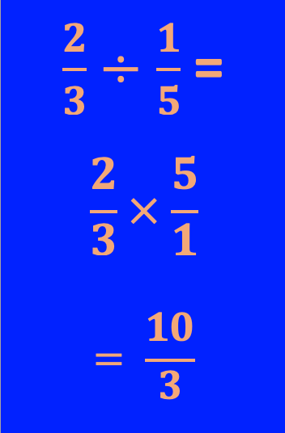

In order to divide two fractions you must understand a few basic "magic" math rules.
Rule: To divide two fractions, divide straight across from left to right.
Example 1:
Example 2:
Notice in each example, you divide two fractions by just dividing straight across reading the problem from left to right. ➾
Dividing two fractions isn't that much different than multiplying two fractions.
Just remember that for both types of problems you just multilply or divide straight across.
What do I do if the Numbers Don't Divide Evenly?
The method above works best when the two numbers divide evenly with no remainder. But what do you do when one or both numbers don't divide in evenly?
Rule #2:
To divide two fractions, you will get the same answer as the problems above if you multiply the first fraction by the reciprocal of the second fraction.
Example 3:
Example 4:
The fine details of the calculations have been left out for simplicity. Try the problems by hand and you will see you get the same answer. Remember: it is okay to cross-cancel prior to multiplying to make your calculation easier.
The main point is that there are two ways you can divide fractions and get the right answer.
The method shown above will get you the right answer 100% of the time. You might remember, the method at the beginning will only work when the two numbers divide evenly.
Due to this fact, most people choose only to use what we call the "Flip and Multiply" Method
(method 2) since it works all the time. Feel free to use both as you see fit.
Here are a few additional examples for you:

You do have the option of "cross-cancelling" by hand before you multiply straight across.
**Careful! You cannot cross-cancel until you have re-written the problem as multiplication.**